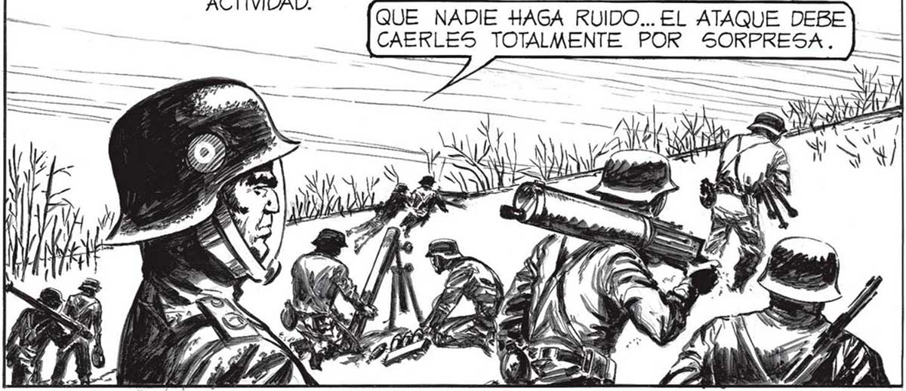
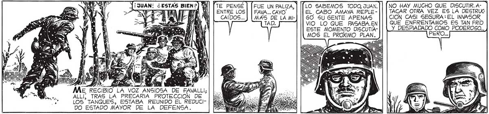
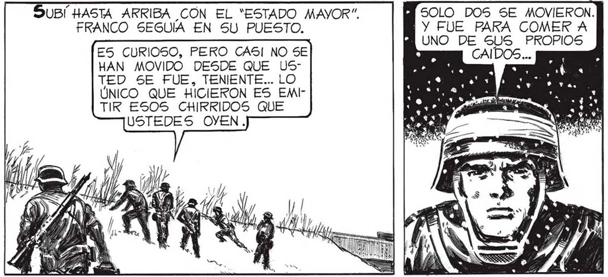

TE PENSÉ ME RECIBIÓ LA VOZ ANSIOSA DE FAVALLI; ALL TRAS LA PRECARIA PROTECCION DE LOS "TANQUES, ESTABA REUNIDO EL REDUCIDO ESTADO MAYOR DE LA DEFENSA. MI OPINION ES QUE A PESAR DE NUESTRA DESVENTAJA, DEBEMOS TRATAR DE FORZAR EL FASO STA VEZ. DE ACUERDO, MAVOR, PERO... LO DEJÉ CONTINUAR A FAVALLI. PENSE EN MISA RÁ MILICIANOS : ¿QUÉ SERÍA DE ELLOS Sl EL INVASOR AVANZABA ? ENTRE LOS CAÍDOS... DISCULPA, FAVA, PERO CREO QUE EL MAYOR TIENE RAZON: UN NUEVO ATAQUE PUEDE RESULTAR. Unos MINUTOS MAS TARDE EL TERRAPLÉN DEL FERROCARRIL HERVÍA ACTIVIDAD. ABRES TOTALMENTE POR SORPRESA. QUE NADIE HAGA RUIDO... EL ATAQUE DEBE DE SuBi HASTA ARRIBA CON EL “ESTADO MAYOR”. FUE UN PALIZA, | FAVA... CAYO' MAS DE LAME TAD. LO SABEMOS TODO, JUAN. EL CABO AMAYA REPLEGO SU GENTE APENAS VIO LO QUE FASABA.EN ESTE MOMENTO DISCUTIAMOS EL PROXIMO PLAN. CION CAS! SEGURA EL INVASOR QUE ENFRENTAMOS ES TAN FRIO Y PESADADO o PODEROSO... LA NOTICIA FUE RECIBIDA CON ENTUSIASMO. A TMUY BIEN, TENIENTE ! ¡AHORA ExPLIQUÉ BREVEMENTE EL MISMO PREPARAREMOS EL A- ...E HIZO UN AHALLAZGO DE - 1 $ DEMAÁN RESIOFRANCO: LOS % NADO CON LAS INVASORES, DES MANOS. REALCONOCEDORES MENTE ¿QUIÉN SIN DUDA DE LA ERA CAPAZ GUERRA TERRES” TRE, ESTABAN APOSTADOS EN DE ACONSEJAR NADA EN AQUEL MOMENTOS UN LUGAR MUY TODOS LOS CAMAL ELEGIDO. MINOS LLEVALA CHANCE DE BAN A LA ANIQUILARLOS MUERTE ... ERA GRANDE. Vi QUE FAVALLI IBA A DECIR ALGO. PERO SE LO GUARDO... Wi SOLO DOS SE MOVIERON. | Y FUE PARA COMER A UNO DE E PROPIOS FRANCO SEGUÍA EN SU PUESTO. ES CURIOSO, PERO CASI NO SE HAN MOVIDO DESDE QUE US” TED SE FUE, TENIENTE... LO ÚNICO QUE HICIERON ES EMITIKR ESOS CHIRRIDOS QUE USTEDES OYEN. NO HAY MUGHO QUE DISCUTIR. A- | TACAR OTRA VEZ ES LA DESTRUC 93


